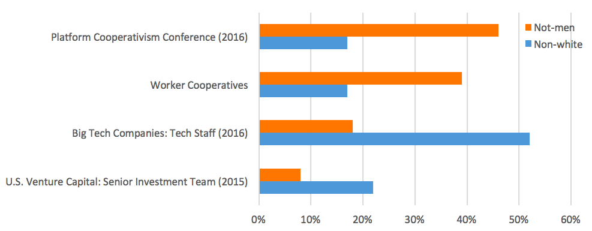

More than code
Sam Nabi

"People aren't edge cases"
— Carina C. Zona, Schemas for the real world

|

|
Social tools, social responsibility
"Machine-learning systems often reflect biases in the real world." – Vivienne Ming, artificial intelligence expert
Inclusive spaces
"Blocking functionality must be part of any social network’s minimum viable product. Because without a block button, social networks are essentially unusable — not viable — for many marginalized people." — Eva Gantz
Venture Capital
Investment
Growth
Acquisition
 via R A D I O on Dribbble
via R A D I O on Dribbble
Startup = Total business domination?
David Heinemeier Hansson, Reconsider
Babson College: The Diana Project (2014)
Executive teams with women are more likely to receive later-stage funding.
... but all-male teams are 3x more likely to receive funding in the first place.
techworker.coop
Platform Cooperatives
gojuno.com
What are the ratios?
Thanks
| sam@samnabi.com | |
| @samnabi | |
| Github | samnabi |
| Website | samnabi.com |